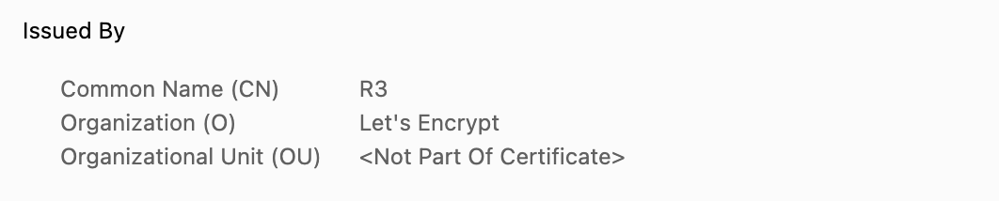

참고한 것들
용어 설명
- ”인증서를 발급해주는 신뢰할 수 있는 기관”
- 그럼 이딴게 왜 필요하지? 싶을 수 있는데, CA 가 필요한 이유를 메디쏜 디지딸 갈든 에 접속하고자 하는 김해람씨의 상황으로 이해해 보자.
- 김해람씨는 ‘메디쏜 디지딸 갈든’의 아주 멋진 작물들을 구경하기 위해 접속을 한다.
- 그럼 이제 서버는 김해람씨에게 “내가 진짜 ‘메디쏜 디지딸 갈든’ 서버가 맞아” 라는 것을 확신시켜 주기 위해 서버 인증서를 제시하게 된다.
- 근데 김해람씨는 이 인증서를 받아들고 고민에 빠진다: 이게 진짜 ‘메디쏜 디지딸 갈든’ 서버가 맞을까? 혹시 어떤 해커가 사칭하기 위해 ‘메디 쏜디 지딸 갈든’ 으로 가짜 웹사이트를 만들어 뿌린거라면?
- 이때 CA 가 등장한다. 김해람씨는 이 인증서를 발급해준 CA 를 (서버 인증서에 이미 포함되어 있는) CA 인증서를 통해 확인하고, 이 CA 가 “이 웹사이트가 진짜 ‘메디쏜 디지딸 갈든’이 맞아!” 라는 것을 보장해 준다는 것을 알게 된다.
- CA 의 보증과 함께 김해람씨는 안심하면서 이 웹사이트에 접속한다.
인증서의 CA 확인해보기
- 실제로 ‘메디쏜 디지딸 갈든’ 의 인증서를 확인해 보면 다음처럼 되어 있는 것을 볼 수 있다:
- 이게 서버 인증서이고:

Issued By항목에 있는 것이 CA 이다: Let’s Encrypt 라는 기관에서 발급해 준 것임을 알 수 있다.

Trusted CA
- 그럼 이런 생각이 들 수 있다: 아니 그럼 CA 는 어떻게 믿어?
- 이건 그냥 믿어야 한다. 사실 보안의 끝은 신뢰이기 때문.
- 인증서를 발급해주는 공인 CA 들이 몇개 있는데, (위에서 나온 Let’s Encrypt 도 그중 하나) 이들의 인증서는 웹 브라우저에 이미 내장되어 신뢰하도록 설정되어 있다.
- 즉, 이 공인 CA 들에 대해서는 믿어 주자고 인터넷 생태계에서 이미 합의가 되어 있다는 것.
- 이런 trusted CA 들을 모아둔 것을 Root Store 라고 하기도 한다.
- 이것도 직접 확인해보자
- 크롬브라우저 기준, 이곳 으로 접속하면 보안 관련 설정을 볼 수 있다. 여기에서
Advanced항목에Manage Certificates을 통해 어떤 인증서들이 신뢰되도록 설정돼있는지 확인할 수 있다.- …근데 맥에서는 잘 안보인다. 윈도우에서는 잘 보였었는데
- 근데 만일 CA 를 확인해 봤을 때 이런 공인 CA 가 아니면 어떻게 될까? 인터넷 돌아다니다 보면 가끔 보이는 이 경고창이 “이 CA 는 믿을 수 없다네” 라는 뜻이다.

- 물론 자연스럽게 (안전하지 않음) 버튼을 누르며 들어가는 게 습관이 됐지만, 어쨋든 이런 웹사이트는 문제가 있을 수 있으니 조심해야 한다.
Security Concerns
- CA 입장에서는 server 를 보증하는 입장에 서있기 때문에 아무한테나 인증서를 발급해주면 안된다.
- 이러한 노력에도 불구하고 CA 를 해킹하거나 속여 가짜 인증서를 발급받는 것 (Spoofing) 과 같은 문제가 지속적으로 발생하고 있다고 한다.